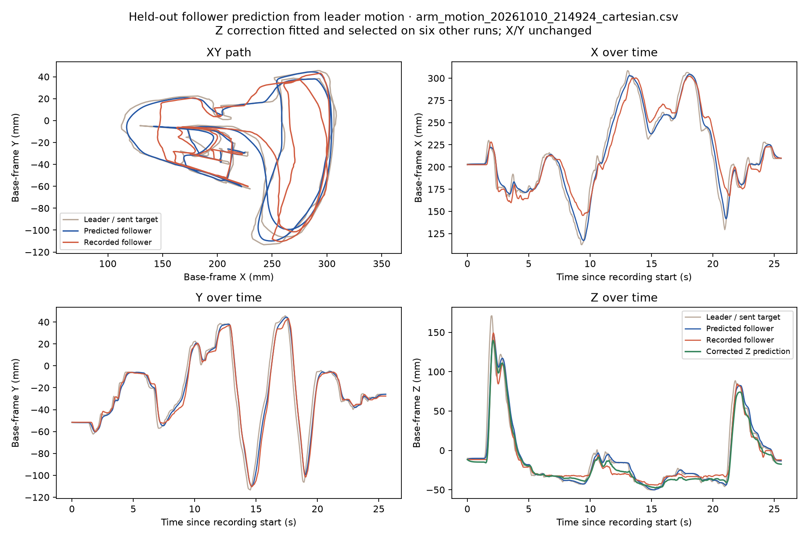

Friday — Voice-Controlled Robot Drawing Arm
A hackathon project where you say “Friday, draw a smiley face” and a low-cost robot arm draws it, asks how it looked, and adjusts. We also estimated pen friction from servo data instead of force sensors.
Overview
The standard SO-101 demo picks up a cube, but it is hard to tell whether the robot improved. A drawing shows every error, and a person can describe it in plain words: “the eyes are too close.” We built a voice agent, named Friday, around that idea.
- My role: team member on a four-person hackathon build (Dhruva Uppaluri, Shubh Mehta, Harsh Gupta, Rishi Chandrasekaran).
- Hardware: leader/follower SO-101 arm pair with a pen on the follower, driven by an AMD Ryzen AI MAX+ 395 station.
- Software: LeRobot, Python/NumPy, MuJoCo, and an ElevenLabs voice agent.
- Status: the live voice loop ran end to end once; repeatability is untested.
How it works
What we built
We teleoperated shapes with the leader arm and logged commands and positions at about 30 Hz. To turn joint angles into a pen position, we touched one dot from six arm poses and solved a least-squares problem; it fit a tip offset of about 38.5 mm, close to the measured 1.5 inches. We then captured the corners of a 170 × 235 mm drawing area and solved inverse kinematics so the pen follows each waypoint, with smooth start-and-stop motion.
The saved 9 is a teleoperated demonstration that we smoothed into a rounder loop. The smiley is generated from two eye dots and a circular arc, with the pen lifted between strokes.

Modelling friction without force sensors
We modelled the follower servos as a delayed first-order response, fitting the delay and time constant across seven recordings. A small ridge-regression correction for the pen’s height switches on only after real motion starts. Leaving one run out at a time, the mean height error was 5.93 mm. This predictor is evaluated offline and does not yet correct the arm while drawing.
To explore pen drag, we compared the recorded path against the friction-free model and split the residual into a constant part (like Coulomb friction) and a speed-dependent part (like viscous drag). We treat these as hypotheses: without a force sensor or ink measurement, we do not claim a measured friction coefficient.
What went wrong
- The arm slumped: in a hover test the shoulder did not hold its pose and the pen pressed into the paper. We dropped fully autonomous drawing and replayed paths derived from demonstrations.
- Imprecise geometry: repeated touches of one dot disagreed by about 10 mm RMS, and the four paper corners failed to close by about 22 mm. We report this as a limit.
- Two processes, one arm: duplicate teleoperation processes held the same serial ports, so the controller now allows a single owner.
- Audio and certificates: the Bluetooth speaker would not pair with the AMD PC, so the voice client moved to a Mac and only tool calls travel over SSH. A Python certificate error then needed a trusted CA bundle.
- API credits: the optional OpenAI step ran out of credits, so it stays a prototype tested only with mocked responses.
Result and next steps
On October 11 we ran the full loop live: a spoken request on a Mac went through ElevenLabs and SSH to the AMD controller and then to the physical arm. The smiley and the 9 both completed, and the operator called the 9 “perfect.” That judgment is by eye in a single session; ink was not measured, and pen height during lifts is modelled, not measured.
Next: measure ink with a camera and a known paper scale, apply the response model during playback, add letters, and repeat the demo enough times to show it works reliably.